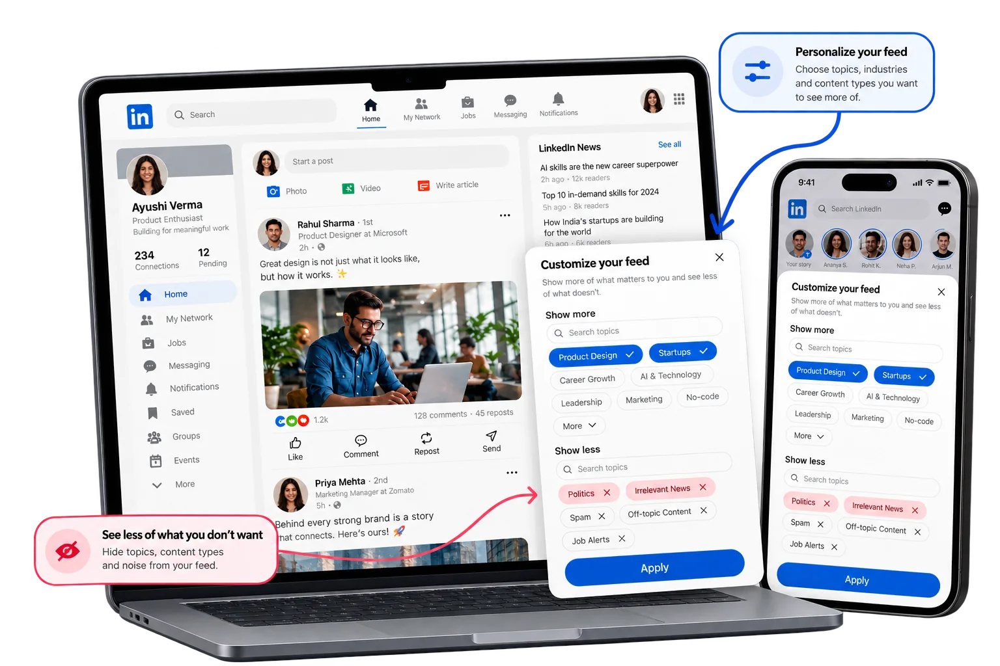

01
Question to validate
Can members predict what “Show less” and “Not interested” will change?
Product management · Product strategy · UX
LinkedIn already offers ways to shape the feed. The question is whether members can predict what those controls will change, see the effect and reverse a choice when it does not help.
This is a product analysis based on public product information. The friction and its prevalence are hypotheses; no internal data or measured impact is claimed.

The recommendation
Start by making the existing feed controls easier to understand and trust. Test whether members can use them to shape the content they see—and whether that makes the feed more useful without narrowing discovery.
Can members predict what “Show less” and “Not interested” will change?
Clarify each control at the moment of use, show what happened and make the choice reversible.
Test comprehension and perceived feed usefulness, while monitoring content diversity and trust.
Start with the goal
The goal is straightforward: help members shape a feed that feels useful, without weakening discovery or trust.
Teardown objective
Assess how the Home Feed can better support relevant professional discovery and member agency, without optimizing for time spent as an end in itself.
Can members more easily shape the content they encounter, and does that improve the perceived value of their feed sessions?
Why this goal?
The analysis focuses on helping members find relevant content while retaining control over what appears in their feed.
See the whole picture
A job seeker, a creator and a hiring manager can open the same feed and want very different things. A useful experience has to account for those differences.
Motivations: learn, keep up, build relationships, find opportunities.
Frustrations to validate: irrelevant repetition, unclear recommendations, low control.
Context: quick check-ins, focused research, career transitions, professional learning.
Motivations: reach the right audience, build credibility, contribute to professional conversation.
Frustrations to validate: unpredictable reach, weak audience fit, incentives that reward volume over value.
Context: publishing, audience development, community participation.
Motivations: sustainable engagement, trusted participation, relevant commercial outcomes.
Tensions: short-term attention can conflict with member trust or creator diversity.
Context: ranking, monetization, safety, platform health, long-term retention.
Understand what people need
A quick catch-up, a deeper search and an opportunity hunt call for different kinds of relevance. These are hypotheses to validate with members.
Stay current on relevant professional updates without scanning an endless feed.
Motivation: stay informed efficiently.
Frustration to test: important updates are buried or repeated content dominates.
Find credible expertise and useful perspectives beyond familiar viewpoints.
Motivation: grow knowledge and judgment.
Frustration to test: the feed feels repetitive or rewards familiar viewpoints.
Discover relevant people, conversations and opportunities tied to a current goal.
Motivation: turn browsing into professional action.
Frustration to test: promotional or weakly relevant content interrupts intent.
Starting observation to validate: a member continues to encounter a content pattern they do not find useful.
This is one explanation to test, not a confirmed root cause. Ranking behaviour, content supply, feedback signals and changing member intent could also explain repeated unwanted content.
Alternative explanations to investigate: ranking signals, content supply, creator repetition and changes in member intent. Research should distinguish these before a feature decision.
Find where the experience falls short
The journey below is a working model for research. The friction points are hypotheses, not observed findings.
Member opens the feed with a specific or loosely formed intent.
Need: a useful starting pointMember scans posts and decides what deserves attention.
Need: relevance and contextMember ignores, hides, unfollows, saves, follows, or explores.
Need: understandable controlsMember returns and judges whether the feed responded.
Need: credible follow-through| Journey stage | Potential gap | Evidence to collect |
|---|---|---|
| Arrive | The member’s intent is not reflected in the content mix. | Session-intent interviews; diary study; feed composition by use case. |
| Evaluate | Why a recommendation appeared is unclear. | Comprehension tests; relevance ratings; think-aloud sessions. |
| Shape the feed | Controls are hard to discover or their consequences are ambiguous. | Task success, time to complete, error rates, usability observation. |
| Return | Similar unwanted content appears again, or members cannot tell whether anything changed. | Track what appears after a member changes a feed setting; use follow-up surveys and repeated-session studies. |
Get the problem right before choosing a feature
Rank the problem only after checking how often it occurs, how much it matters and whether evidence supports the diagnosis.
| Candidate problem | User importance | Goal alignment | Evidence confidence | Initial priority |
|---|---|---|---|---|
| Members cannot predict what a feed control will change | Potentially high | High: agency and usefulness | Low until validated | Investigate first |
| Recommendation rationale is unclear | Medium–high | High: trust and understanding | Low until validated | Investigate |
| Members need a comprehensive preference dashboard | Unknown | Potentially high | Low; solution demand unproven | Do not assume |
| Feed content lacks sufficient diversity | Potentially high for some cohorts | High: discovery and trust | Requires content audit | Measure in parallel |
Explore a few ways forward
Compare interventions against the same test: can members understand the control, predict its effect and recover from a poor choice?
Improve action labels, confirm the choice, explain expected effects, and make undo easy.
Strength: narrow scope and close to the moment of friction.
Trade-off: may not solve broader control over the content mix.
Provide a concise, understandable reason for why a post was recommended, where reliable.
Strength: improves interpretability and can build trust.
Trade-off: explanation without a useful action may not resolve the problem.
Let members review and adjust a compact set of topic and recommendation preferences.
Strength: supports broader and recurring control.
Trade-off: adds complexity and may ask members to do too much setup.
Start with Option A. Explain what each feed control changes. Add a broader preference hub only if research shows that these in-context controls are not enough.
Core requirements: plain-language labels, clear scope, visible confirmation, reversibility, keyboard accessibility, and honest expectations about when the feed may change.
Choose what to try first
These are relative hypotheses for discussion, not engineering estimates. Confirm scope and dependencies with the teams responsible.
| Solution | Expected impact | Relative effort | Priority | Reason |
|---|---|---|---|---|
| Make existing feed controls clearer and reversible | Medium–high if the friction is real | Low–medium | First experiment | Tests the core hypothesis with a contained change. |
| Add recommendation rationale | Medium | Medium | Next / pair selectively | Useful if lack of understanding is a meaningful contributor. |
| Build a preference hub | Potentially high | High | Defer | More investment before demand and usability are proven. |
| Redesign the entire feed ranking model | Unknown; potentially broad | Very high | Out of initial scope | Too large to be the first response to a problem that has not yet been validated. |
Impact and effort ratings are qualitative hypotheses, not estimates based on internal data. Re-score after research and technical discovery.
Know what better looks like
Measure comprehension and perceived usefulness together. Control usage alone does not prove that the feed improved.
Perceived feed usefulness per sampled session. Ask a brief, consistently worded question about whether the session surfaced useful professional content.
Why: aligns the test with the stated goal rather than assuming longer sessions are better.
Eligible members who can find and understand the feed controls.
If awareness is low, investigate placement, labeling, and discoverability before concluding the feature lacks value.
Successful use of feed controls, repeat use where appropriate, and whether unwanted content keeps appearing.
When usage is low, investigate whether members need the control, can find it and understand when to use it.
Content diversity, creator reach concentration, member trust, hide/unfollow rates, feed abandonment, and relevant ad-experience guardrails.
A local improvement should not quietly create unacceptable costs elsewhere in the ecosystem.
Learn before you grow it
The experiment should show whether clearer feed controls improve the member’s experience over repeated sessions—not simply whether people try a new control once.
Members who can easily understand and reverse their feed choices will feel more in control and find the feed more useful, without an unacceptable loss of content diversity.
Primary outcome improves and guardrails remain healthy.
Awareness or use is low, or the result varies meaningfully by cohort.
Usefulness does not improve, or ecosystem and trust costs exceed predefined limits.
Think through the tricky moments
A credible solution accounts for the cases where a simple preference could create a surprising or harmful result.
A member follows a creator but dislikes a specific topic or post format.
Mitigation: separate post-, topic-, and creator-level controls.
There may not be enough fresh content to satisfy a preference.
Mitigation: keep a balanced default and explain the limits honestly.
Professional goals and interests shift over time.
Mitigation: make preferences reviewable, reversible, and non-permanent.
Inferred interests may reveal sensitive information.
Mitigation: avoid presenting inferred traits as facts; complete privacy and policy review.
Members may assume that feed controls also change the ads they see.
Mitigation: state the scope of each control and distinguish ad preferences where needed.
Personalised filtering may concentrate or reduce distribution unevenly.
Mitigation: monitor reach distribution, content diversity, and cohort-level effects.
A staged path to evidence
Use the smallest release that can validate the core assumption, then expand only when the result justifies additional complexity.
Review the current controls, interview members, observe how they use them, and establish how significant the problem is.
Exit: problem evidencedTest wording, discoverability, expected consequences, reversibility, and edge cases.
Exit: clear and usableRun a controlled test with defined primary outcome, guardrails, and stop criteria.
Exit: interpretable evidenceExpand, iterate, or stop. Monitor for delayed effects and regression after novelty fades.
Exit: durable valueWhat is known vs. assumed
Separate what is known, what is likely and what still needs evidence.
These sources document LinkedIn’s published feed controls. Member research and usability testing will establish where the experience can improve.
Public documentation reviewed 24 October 2026. Validate live product behavior in the target account, device, and region before treating it as a current-state audit.